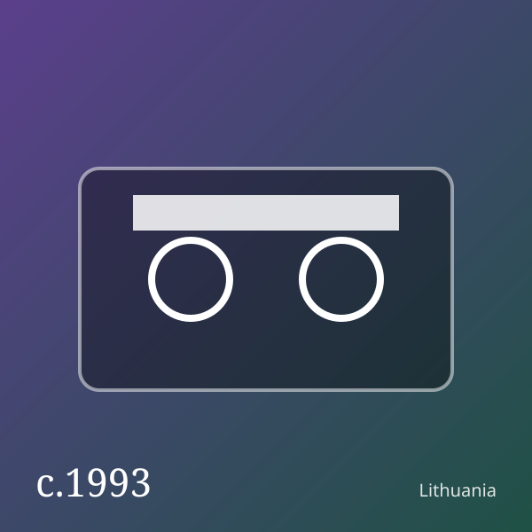

Whispers, flutes and a tape almost no one heard

Don Campau's Living Archive of underground cassettes has a short entry on Echidna Aukštyn, a Lithuanian ensemble led by Ramūnas Jaras. Their tape from around 1993 is a bizarre mix of creepy whispers, dark instrumental passages, free improvisation, echoing voices, field recordings and flutes.
Two tapes, a name, and a description. This is what most of the world's music looks like once it has slipped out of memory. If you made it, or own it, we would love to hear from you.